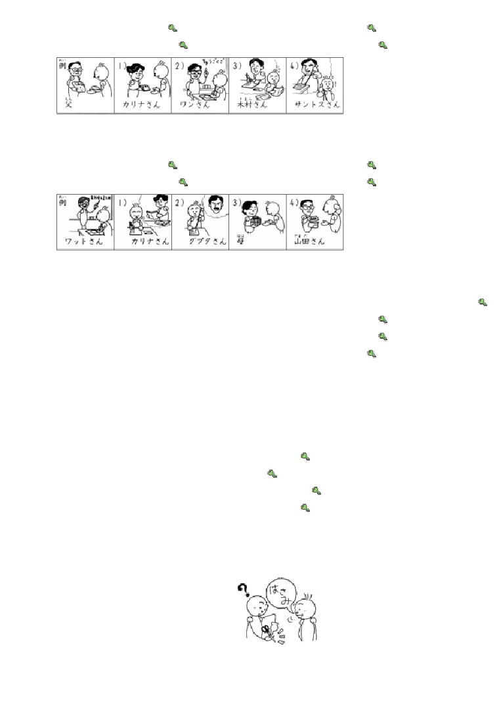
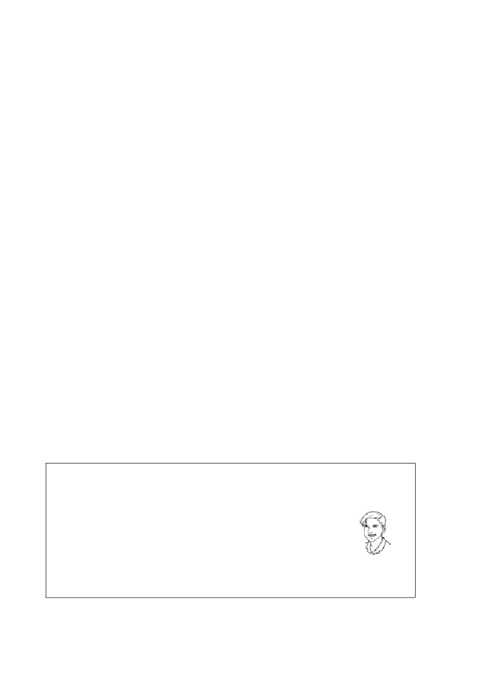
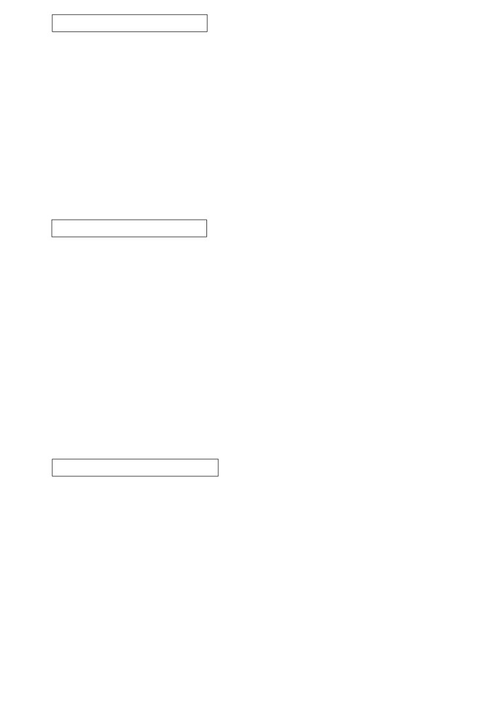

れい
ちち
課:7 (頁:5/9)
4.
例： もらいます →
父に シャツを もらいました。
か
なら
1)
借ります →
2)
習います →
3)
もらいます →
4)
もらいます →
れい
なら
えい ご
なら
5.
例： 習います →
だれに 英語を 習いましたか。
なら
……ワットさんに 習いました。
か
1)
書きます →
2)
かけます →
か
3)
もらいます →
4)
借ります →
れい
かあ
たんじょう び
なに
はな
6. 例： お母さんの 誕生日に 何を あげましたか。（ 花 ）
はな
→ 花を あげました。
きょ ねん
なに
ほん
1)
去年の クリスマスに 何を もらいましたか。（ ネクタイと 本 ） →
に ほん ご
なら
2)
どこで 日本語を 習いましたか。（ アメリカ ） →
か ぞく
でん わ
3)
いつ 家族に 電話を かけますか。（ あした ） →
か
とも だち
4)
だれに この CDを 借りましたか。（ 友達 ） →
れい
きっ ぷ
か
きっ ぷ
か
7.
例1： 切符を 買います（ はい ） →
もう 切符を 買いましたか。
か
……はい、もう 買いました。
れい
て がみ
か
て がみ
か
例2： 手紙を 書きます（ いいえ ） →
もう 手紙を 書きましたか。
……いいえ、まだです。
おく
1)
レポートを 送ります（ いいえ ） →
きょう と
い
2)
京都へ 行きます（ はい ） →
かえ
3)
ミラーさんは 帰ります（ いいえ ） →
ね
4)
テレサちゃんは 寝ます（ はい ） →
れん しゅう
練習 Ｃ
に ほん ご
なん
1. Ａ: これは 日本語で 何ですか。
Ｂ:
「はさみ」です。
Ａ:
「はさみ」ですか。
Ｂ: はい、そうです。
1)
ホッチキス
け
2)
消しゴム
3)
セロテープ
とけい
2. Ａ:
その 時計、すてきですね。

か ぞく
に もつ
おく
課:7 (頁:7/9)
3)
家族に （ 荷物を送ります ）。
ちち
とけい
4)
父に
（ 時計をもらいます ）。
かの じょ
でん わ
5)
彼女に （ 電話をかけます ）。
れい
くつ
5.
例： これは イタリア（ の ） 靴です。
た
1)
わたしは はし（ で ） ごはんを 食べます。
おく
2)
ファクス（ で ） レポートを 送りました。
えい ご
なん
3)
「さようなら」は 英語（ で ） 何ですか。
かの じょ
て がみ
か
4)
わたしは きのう 彼女（ に ） 手紙（ を ） 書きました。
とも だち
みやげ
5)
わたしは 友達（ に（から） ） お土産（ を ） もらいました。
れい
ひる
た
6.
例： もう 昼ごはんを 食べましたか。
……いいえ、（ まだです ）。
た
た
これから（ 食べます ）。いっしょに（ 食べませんか ）。
おお さか じょう
い
1)
もう 大阪城へ 行きましたか。
……いいえ、（ まだです ）。
にち よう び
い
い
日曜日 ミラーさんと（ 行きます ）。いっしょに（ 行きませんか ）。
か
2)
もう クリスマスカードを 書きましたか。
か
……はい、（ ［もう］書きました ）。
に もつ
おく
3)
もう 荷物を 送りましたか。
……いいえ、（ まだです ）。
ご ご
おく
きょうの 午後（ 送ります ）。
ね
4)
テレサちゃんは もう 寝ましたか。
ね
……はい、（ ［もう］寝ました ）。
ど よう び
にち よう び
7.
土曜日と 日曜日
と しょ かん
い
と しょ かん
た ろう くん
あ
けさ 図書館へ 行きました。 図書館で 太郎君に 会いました。
た ろう くん
み
太郎君と いっしょに ビデオを 見ました。 わたしは
りょ こう
ほん
か
旅行の 本を 借りました。
にち よう び
あさ
りょ こう
ほん
よ
あしたは 日曜日です。 朝 旅行の 本を 読みます。
ご ご
い
はは
たん じょう び
午後 デパートヘ 行きます。 母の 誕生日の
か
きょ ねん
はは
はな
プレゼントを 買います。 去年は 母に 花を
に ほん
はな
ほん
あげました。 ことしは 日本の 花の 本を あげます。
ど よう び
1)
（ ○ ）きょうは 土曜日です。
た ろう くん
と しょ かん
い
2)
（ × ）ミラーさんは けさ 太郎君と 図書館へ 行きました。
と しょ かん
りょ こう
ほん
よ
3)
（ × ）ミラーさんは 図書館で 旅行の 本を 読みました。
かあ
はな
4)
（ × ）ミラーさんは ことしも お母さんに 花を あげます。

文法
課:7 (頁:8/9)
１.
名詞（工具／手段） で 動詞
助詞「で
」表示手段、方法。
た
① はしで 食べます。
用筷子吃。
に ほん ご
か
② 日本語で レポートを 書きます。
用日語寫報告。
ご
なん
２ . “詞／句” は ～ 語で 何ですか
以這個疑問句，詢問某個詞或句子用別的語言怎麼說。
えい ご
なん
③ 「 ありがとう 」 は 英語で 何ですか。
“謝謝”用英語怎麼說？
…「 Thank you」 です。
…是“ Thank you”。
に ほん ご
なん
④ 「 Thank you」 は 日本語で 何ですか。
“謝謝”用日語怎麼說？
…「 ありがとう 」 です。
…是“ ありがとう ”。
３.
名詞（人） に あげます ，等
「あげます」「かします」「おしえます
」等動詞，都有給、借、教的對象人
物，這個對象用助詞「に
」表示。
やま だ
き むら
はな
⑤ 山田さんは 木村さんに 花を あげました。
山田先生送花給木村小姐。
ほん
か
⑥ イーさんに 本を 貸しました。
借書給了李小姐。
た ろう くん
えい ご
おし
⑦ 太郎君に 英語を 教えます。
教太郎英語。
〔註〕「おくります」「でんわを かけます
」之類的情況，對象除了人以外
也可以是場所名詞。這時，除助詞「に
」之外有時還會使用「へ
」。
かい しゃ
でん わ
⑧ 会社に 電話を かけます。
打電話給公司。
(へ)
４.
名詞（人） に もらいます ，等
「もらいます」「かります」「ならいます
」等動詞，是站在承受動作的人這
方來說的。“得到”、“借”、“學習”的對象用助詞「に
」表示。
き むら
やま だ
はな
⑨ 木村さんは 山田さんに 花を もらいました。
木村小姐收到了山田先生送的花。
か
⑩ カリナさんに ＣＤを 借りました。
我向卡莉娜小姐借了 ＣＤ
ちゅう ごく
なら
⑪ ワンさんに 中国を 習います。
跟王先生學中文。
這個句型中，「に
」可以用「から
」代替。尤其當對象不是人，而是公司或學
校等組織時，就要用「から
」而不用「に
」。
き むら
やま だ
はな
⑫ 木村さんは 山田さんから 花を もらいました。
木村小姐收到了山田先生送的花。